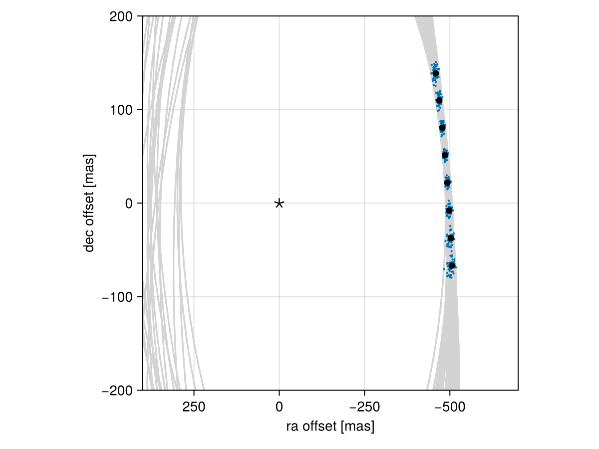

Posterior Predictive Checks
A posterior predictive check compares our true data with simulated data drawn from the posterior. This allows us to evaluate if the model is able to reproduce our observations appropriately. Samples drawn from the posterior predictive distribution should match the locations of the original data.
To demonstrate, we will fit a model to relative astrometry data:
using Octofitter
using Distributions
astrom_like = PlanetRelAstromLikelihood(Table(;
epoch= [50000,50120,50240,50360,50480,50600,50720,50840,],
ra = [-505.764,-502.57,-498.209,-492.678,-485.977,-478.11,-469.08,-458.896,],
dec = [-66.9298,-37.4722,-7.92755,21.6356, 51.1472, 80.5359, 109.729, 138.651,],
σ_ra = fill(10.0, 8),
σ_dec = fill(10.0, 8),
cor = fill(0.0, 8)
))
@planet b Visual{KepOrbit} begin
a ~ truncated(Normal(10, 4), lower=0.1, upper=100)
e ~ Uniform(0.0, 0.5)
i ~ Sine()
ω ~ UniformCircular()
Ω ~ UniformCircular()
θ ~ UniformCircular()
tp = θ_at_epoch_to_tperi(system,b,50420) # reference epoch for θ. Choose an MJD date near your data.
end astrom_like
@system Tutoria begin
M ~ truncated(Normal(1.2, 0.1), lower=0.1)
plx ~ truncated(Normal(50.0, 0.02), lower=0.1)
end b
model = Octofitter.LogDensityModel(Tutoria)
using Random
Random.seed!(0)
chain = octofit(model)Chains MCMC chain (1000×28×1 Array{Float64, 3}):
Iterations = 1:1:1000
Number of chains = 1
Samples per chain = 1000
Wall duration = 4.26 seconds
Compute duration = 4.26 seconds
parameters = M, plx, b_a, b_e, b_i, b_ωy, b_ωx, b_Ωy, b_Ωx, b_θy, b_θx, b_ω, b_Ω, b_θ, b_tp
internals = n_steps, is_accept, acceptance_rate, hamiltonian_energy, hamiltonian_energy_error, max_hamiltonian_energy_error, tree_depth, numerical_error, step_size, nom_step_size, is_adapt, loglike, logpost, tree_depth, numerical_error
Summary Statistics
parameters mean std mcse ess_bulk ess_tail rh ⋯
Symbol Float64 Float64 Float64 Float64 Float64 Float ⋯
M 1.1831 0.0907 0.0038 571.7797 515.2067 1.00 ⋯
plx 50.0000 0.0210 0.0007 953.0087 502.4503 0.99 ⋯
b_a 11.7653 2.2808 0.1421 205.8241 378.4014 1.00 ⋯
b_e 0.1574 0.1134 0.0066 274.0602 404.8522 0.99 ⋯
b_i 0.6316 0.1620 0.0172 108.7180 89.7109 1.00 ⋯
b_ωy 0.0135 0.7396 0.0669 140.4376 594.4779 1.00 ⋯
b_ωx -0.0018 0.6867 0.0545 160.2923 561.4387 1.00 ⋯
b_Ωy -0.0249 0.7486 0.1111 53.5577 277.0555 1.00 ⋯
b_Ωx 0.0086 0.6811 0.0916 63.5969 314.7593 1.00 ⋯
b_θy 0.0745 0.0096 0.0003 942.2497 757.7901 1.00 ⋯
b_θx -0.9992 0.0999 0.0033 967.3241 703.8093 1.00 ⋯
b_ω -0.1141 1.8093 0.1193 318.6701 599.7544 1.00 ⋯
b_Ω -0.4494 1.8082 0.2245 82.4065 271.3655 1.01 ⋯
b_θ -1.4963 0.0068 0.0002 984.1871 613.4144 1.00 ⋯
b_tp 42572.5570 5027.2351 281.2996 318.4911 459.2335 1.00 ⋯
2 columns omitted
Quantiles
parameters 2.5% 25.0% 50.0% 75.0% 97.5%
Symbol Float64 Float64 Float64 Float64 Float64
M 1.0082 1.1210 1.1848 1.2476 1.3579
plx 49.9592 49.9851 50.0003 50.0150 50.0406
b_a 8.1344 10.1069 11.3658 13.1827 16.7001
b_e 0.0042 0.0611 0.1394 0.2435 0.4067
b_i 0.2307 0.5488 0.6564 0.7438 0.8801
b_ωy -1.0656 -0.7130 0.0579 0.7648 1.0687
b_ωx -1.0271 -0.6947 0.0434 0.6253 1.0385
b_Ωy -1.0548 -0.7922 -0.0259 0.7671 1.0610
b_Ωx -1.0575 -0.6030 -0.0118 0.6082 1.0939
b_θy 0.0576 0.0678 0.0742 0.0807 0.0944
b_θx -1.2226 -1.0561 -0.9931 -0.9258 -0.8267
b_ω -2.9439 -1.8730 0.0819 1.2332 2.9992
b_Ω -2.9923 -2.3017 -0.0161 1.0020 2.9318
b_θ -1.5094 -1.5008 -1.4963 -1.4917 -1.4829
b_tp 31132.8232 39698.3869 43450.6215 46017.5261 49861.2205
We now have our posterior as approximated by the MCMC chain. Convert these posterior samples into orbit objects:
# Instead of creating orbit objects for all rows in the chain, just pick
# every twentieth row.
ii = 1:20:1000
orbits = Octofitter.construct_elements(chain, :b, ii)50-element Vector{Visual{KepOrbit{Float64}, Float64}}:
Visual{KepOrbit{Float64}, Float64}(KepOrbit(8.18, 0.248, 0.308, -2.41, 3.76, 45700.0, 1.12), 49.97375156307431, 4.127466791034547e6)
Visual{KepOrbit{Float64}, Float64}(KepOrbit(13.4, 0.0678, 0.733, 2.55, 3.45, 36800.0, 1.21), 50.01319495991496, 4.124211623858847e6)
Visual{KepOrbit{Float64}, Float64}(KepOrbit(14.0, 0.0691, 0.773, -2.56, 0.466, 48800.0, 1.26), 50.01211974047128, 4.124300291016945e6)
Visual{KepOrbit{Float64}, Float64}(KepOrbit(9.24, 0.136, 0.535, 0.562, 1.05, 45500.0, 1.17), 50.00593375423651, 4.1248104877658687e6)
Visual{KepOrbit{Float64}, Float64}(KepOrbit(9.71, 0.231, 0.467, 0.787, 0.108, 43500.0, 1.17), 49.99712805463668, 4.125536966335233e6)
Visual{KepOrbit{Float64}, Float64}(KepOrbit(11.1, 0.331, 0.61, -2.28, 2.75, 40700.0, 1.16), 49.98083241097903, 4.12688204758052e6)
Visual{KepOrbit{Float64}, Float64}(KepOrbit(8.09, 0.265, 0.328, -2.35, 3.91, 46300.0, 1.17), 50.00215378969247, 4.1251223070818963e6)
Visual{KepOrbit{Float64}, Float64}(KepOrbit(10.1, 0.0901, 0.58, -2.64, 4.01, 44500.0, 1.25), 50.042629495535365, 4.1217858070068494e6)
Visual{KepOrbit{Float64}, Float64}(KepOrbit(11.9, 0.178, 0.748, 0.517, 4.72, 37800.0, 1.28), 50.035885166577394, 4.1223413818564634e6)
Visual{KepOrbit{Float64}, Float64}(KepOrbit(11.0, 0.165, 0.737, -2.22, 3.64, 43600.0, 1.24), 50.00964303323947, 4.124504545311464e6)
⋮
Visual{KepOrbit{Float64}, Float64}(KepOrbit(15.3, 0.201, 0.904, -2.74, 3.14, 36100.0, 1.32), 49.97850669904619, 4.127074088909032e6)
Visual{KepOrbit{Float64}, Float64}(KepOrbit(13.8, 0.311, 0.755, 0.57, 4.77, 33500.0, 1.13), 50.00884450772148, 4.1245704041042626e6)
Visual{KepOrbit{Float64}, Float64}(KepOrbit(10.9, 0.293, 0.7, 0.957, 6.28, 42400.0, 1.22), 50.033129512383276, 4.1225684263653564e6)
Visual{KepOrbit{Float64}, Float64}(KepOrbit(9.69, 0.065, 0.557, 0.0693, 1.2, 44400.0, 1.1), 49.99150066670818, 4.1260013652153094e6)
Visual{KepOrbit{Float64}, Float64}(KepOrbit(13.9, 0.0164, 0.813, -2.45, 0.467, 48800.0, 1.12), 49.99595181472342, 4.125634026618462e6)
Visual{KepOrbit{Float64}, Float64}(KepOrbit(15.9, 0.35, 0.838, 0.211, 6.2, 32300.0, 1.17), 50.0056960622806, 4.1248300942177293e6)
Visual{KepOrbit{Float64}, Float64}(KepOrbit(11.6, 0.194, 0.687, -2.55, 3.24, 41300.0, 1.24), 49.97673872052217, 4.1272200883988547e6)
Visual{KepOrbit{Float64}, Float64}(KepOrbit(11.2, 0.307, 0.762, 0.916, 0.115, 42200.0, 1.24), 50.0314033708706, 4.122710659763186e6)
Visual{KepOrbit{Float64}, Float64}(KepOrbit(9.49, 0.0787, 0.306, -2.31, 3.74, 44900.0, 1.1), 50.03200734132275, 4.1226608917136188e6)Calculate and plot the location the planet would be at each observation epoch:
using CairoMakie
epochs = astrom_like.table.epoch' # transpose
x = raoff.(orbits, epochs)[:]
y = decoff.(orbits, epochs)[:]
fig = Figure()
ax = Axis(
fig[1,1], xlabel="ra offset [mas]", ylabel="dec offset [mas]",
xreversed=true,
aspect=1
)
for orbit in orbits
Makie.lines!(ax, orbit, color=:lightgrey)
end
Makie.scatter!(
ax,
x, y,
markersize=3,
)
fig
Makie.scatter!(ax, astrom_like.table.ra, astrom_like.table.dec,color=:black, label="observed")
Makie.scatter!(ax, [0],[0], marker='⋆', color=:black, markersize=20,label="")
Makie.xlims!(400,-700)
Makie.ylims!(-200,200)
fig
Looks like a great match to the data! Notice how the uncertainty around the middle point is lower than the ends. That's because the orbit's posterior location at that epoch is also constrained by the surrounding data points. We can know the location of the planet in hindsight better than we could measure it!
You can follow this same procedure for any kind of data modelled with Octofitter.